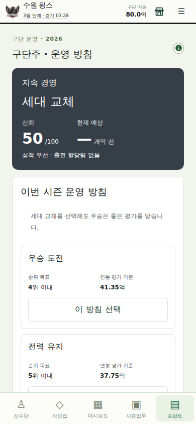
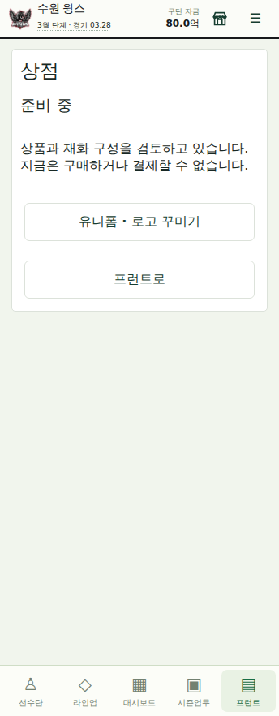
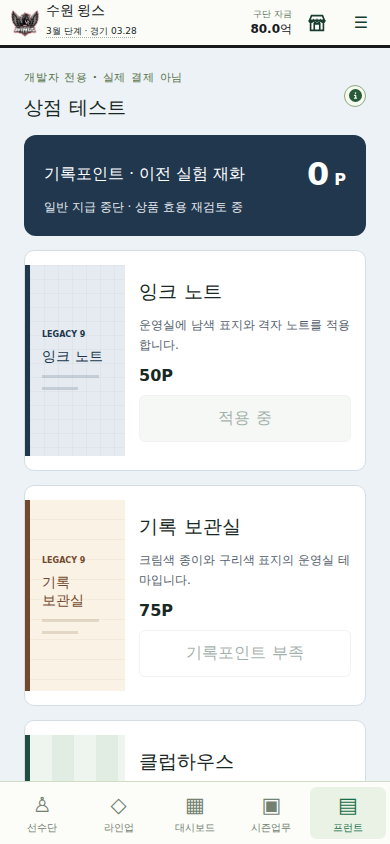

LEGACY9 · 0.2.2 · 사용자 피드백 수정
우승은 성공으로.
상점은 가치부터.
0.2.1의 출전 할당 평가와 꾸미기 전용 BM을 수정합니다. 새 상품을 늘리지 않고 잘못된 평가와 일반 노출을 먼저 바로잡았습니다.
378검사 통과 / 실패 0
1,800정규 경기 / 4회 시즌 전이
4격리 브라우저 화면 크기
별도 보류 과제 보고서 · 검증 요약 · 시뮬레이션 원자료 · UI 검증 결과
01 · 프로젝트 지침과 범위
AGENTS.md 최상단에 커밋 제목·본문, 설명, 새 설명 주석과 보고서를 한국어로 쓰도록 기록했습니다. 기존 식별자·명령·과거 이력은 바꾸지 않습니다. 사용자 피드백이 0.2.1 임시 정책보다 우선합니다.
이번 범위는 평가의 잘못된 결과, 복잡한 출전 할당량, 상점의 일반 노출을 바로잡는 것입니다. 직접 효용 상품이나 실제 시각 콘텐츠를 배제하는 정책은 철회하지만 가격·상품 효과를 임의 확정하지 않았습니다.
02 · 구단주 평가 Before / After
| 항목 | 0.2.1 | 0.2.2 |
|---|
| 세대 교체와 우승 | 육성 비중 미달이면 종합 최대59점 | 정규 1위·한국시리즈 우승은 최소80점 |
| 사용자 관리 | 타석·투구 아웃 점유율 목표 | 출전 할당량 제거, 성적·연봉만 평가 |
| 포스트시즌 | 정규시즌 평가로 종료 | 한국시리즈 우승 확정 때 현재 시즌 재평가 |
| 이전 저장 | 당시 산식으로 검증 | 이전 기록 읽기 보존, 현재 시즌만 다음 업무 처리 때 보정 |
80점은 기존 목표 충족 기준을 재사용했습니다. 우승 무조건 만점이 아니라 우승을 실패로 취급하지 않는 하한입니다. 젊은 선수 점유율은 새 점수에서 제외하고 인원·이닝 할당량으로 대체하지 않았습니다. 육성 방향을 별도의 장기 성과로 표현하는 후속 설계는 보류합니다.
한국시리즈 후 평가를 반영할 때는 평가 직전 신뢰에서 다시 계산합니다. 이미 오른 신뢰에 반복 가산하지 않습니다. 완료해 다음 해로 넘어간 과거 평가와 지급액은 소급 변경하지 않습니다.
03 · 상점·결제 테스트
일반 상점은 준비 중입니다. 기록포인트·상품 목록·구매·결제 테스트를 일반 화면에 노출하지 않습니다. 기존 무료 꾸미기 기능은 유지하며 이미 적용한 테마도 유지하거나 기본으로 복원할 수 있습니다.
기존 숨은 개발자 모드에서만 실험 상점을 열 수 있습니다. 코어 구매 함수도 개발자 모드가 아니면 거부합니다. 테스트는 현재 저장에 남으므로 별도 테스트 저장 사용을 안내합니다.
결제 테스트의 정확한 범위: 버튼은 실제 구매 함수가 미연결 요청을 거부하는지 확인할 뿐입니다. 실제 청구, 샌드박스 결제 승인, 영수증, 유료 이용권은 없습니다. 개발자 모드는 서버 인증의 대체물이 아닙니다.
04 · 기록포인트는 무엇이었나
기록포인트는 개발 과정에서 추가한 테마 전용 무료 실험 재화였습니다. 유료재화의 하위 등급으로 설계된 것은 아니지만, 운영·육성과 연결되지 않는 별도 재화를 늘렸고 그 필요성을 입증하지 못했습니다.
새 커리어 자동 생성과 일반 시즌 완주 자동 지급을 중단했습니다. 기존 잔액·구매 기록을 삭제하거나 아직 없는 유료재화로 임의 환산하지 않았습니다. 개발자 테스트와 이전 저장 호환용으로만 남깁니다. 유료재화의 구체적인 가격·획득량·계정 지갑은 이번에 구현하지 않았습니다.
05 · BM과 현금 사용처에 대한 판단
운영실의 색상 테마만으로 충분한 상품 가치를 제공했다는 판단을 철회합니다. 운영자금·훈련 등 직접 효용과, 실제 인물 일러스트·로고·경기 표현을 바꾸는 시각적 가치를 함께 검토해야 합니다. 상품 후보는 별도 보류 보고서에 장단점·의존성·검증 기준으로 남겼습니다.
시설 완성 뒤의 현금 사용처와 다음10년 이월 상한은 별개입니다. 이월 제한은 다음 회차의 자산 누적을 조절할 수 있지만 현재 회차 안에서 돈 쓸 곳을 만들지는 못합니다. 사용자가 든 100억/150억 엔 사례를 원화 정책으로 복사하지 않았고 실제 현금 제한도 넣지 않았습니다.
06 · 실제 화면

출전 비율 할당을 제거한 구단주 화면
일반 모드: 준비 중, 테스트 버튼 없음
개발자 모드: 테스트 포인트·미연결 차단 검사
07 · 기술 변경과 저장
OwnerReview에 선택적인 ruleVersion:2와 champion을 추가했습니다. 이전 기준 기록은 구식 검증으로 읽고, 새 평가는 출전 점수 null과 우승 여부를 검증합니다. 저장 스키마를 전면 교체하지 않았습니다.
상점 원장의 일반 자동 지급을 중단한 뒤에도 기존 금액·중복·소유권 검증은 유지합니다. 저장 실패 때 화면 상태를 확정하지 않습니다. 경기 난수·능력치·기본 성장식은 수정하지 않았습니다.
08 · 검증과 관측
깨끗한 npm ci, 타입 검사와 378개 테스트, 빌드를 수행합니다. 기존 59점 세대교체 우승 저장의 읽기 보존, 현재 시즌 보정, 실제 한국시리즈 반영, 중복 신뢰/지원금 방지를 검사했습니다.
72경기3시즌과144경기1시즌, 정규1,800경기·포스트시즌·오프시즌·다음 시즌 전이를 실행했습니다. 아래 기말 현금은 사용자 구단 기준이며 우승 평가는 해당 시즌 우승팀 기준입니다. 다른 시드 경제 균형을 확정하는 자료는 아닙니다.
| 시나리오 | 우승팀 정규 순위 | 우승팀 평가 | 사용자 기말 현금 | 기존 테마·원장 |
|---|
| 72경기 / 2026 | 1위 | 91.55 | 157.70억 | 보존 |
| 72경기 / 2027 | 1위 | 90.67 | 286.28억 | 보존 |
| 72경기 / 2028 | 4위 | 90.67 | 402.15억 | 보존 |
| 144경기 / 2026 | 1위 | 91.55 | 173.35억 | 보존 |
344×882,360×640,390×844,1280×844 Chromium에서 일반 준비중·숨은 개발자 토글·구매·미연결 검사·저장 실패·재접속·방침 잠금을 확인했습니다. 초기 저장/하루 진행은 실제 코어로 구성했고 주요 조작은 UI로 실행했습니다. 실물 스마트폰 검증은 아닙니다.
09 · 남은 과제와 다음 순서
현재 결과는 평가와 테스트 노출의 수정이지, 완성된 BM이나 육성 메타게임은 아닙니다. 다음 작은 작업은 ECON-FANS-022: 시설 완성 뒤의 반복 투자 효용과 현금흐름을 측정하고, 다음10년 계승과 상품 가치를 함께 설계하는 것입니다.
인물형 스태프, 스카우팅 정보, 팬/AI 투자, 스킬·선수 상품, 계정/실결제/광고는 별도 보고서에서 미구현 상태로 구분했습니다.
10 · 변경 이력
핵심 변경: 01074a6 한국어·사용자 지침, 3ab4c10 우승 우선/할당 제거/개발자 상점. 아래는 검증 입력까지의 한국어 작업 이력입니다.
| 커밋 | 목적 |
|---|
836fa72 | 검증: 사용자 피드백 수정용 격리 소스와 실행 환경 준비 |
b3b3053 | 검증: 기존 파일 대조와 원격 변경 보호를 갖춘 수정 반영 절차 추가 |
e522281 | 지침: 한국어 기록과 사용자 피드백 우선 원칙 반영 준비 |
01074a6 | 지침: 한국어 커밋·설명과 구단주·상점 피드백을 최우선 규칙으로 반영 |
857b0a7 | 검증: 수정 전후 해시를 대조하는 소규모 변경 전송 지원 |
b2ebf3b | 수정: 검증된 구단주 평가와 개발자 전용 상점 변경 저장 |
3ab4c10 | 수정: 우승 우선 평가와 출전 할당량 제거 및 개발자 전용 상점 적용 |
0e192af | 검증: 임시 실행 환경 보관을 끝내고 회귀 검사 로그만 유지 |
ee5965b | 검증: 일반 상점과 숨은 개발자 모드의 실제 조작 검사 추가 |
d7a20ee | 검증: 우승 평가와 구세이브 자산 보존을 다년 시즌으로 확인 |
144f0c1 | 문서: 수정 결과와 별도 보류 과제를 실행 증거로 보고서화 |
02ad32f | 문서: 0.2.2 버전과 게임 내 보류 과제 보고서 연결 준비 |
b6e2bed | 문서: 0.2.2 버전과 별도 보류 보고서 및 최신 검증 명령 연결 |
c61d696 | 검증: 0.2.2 실제 UI와 보류 보고서 증거를 검증 후 원격 보관 |
52013a9 | 수정: 보고서의 실제 HTML 경로 연결을 검증 후 반영하도록 저장 |
014301d | 수정: 보고서 링크가 게임 화면으로 돌아가지 않도록 HTML 경로 명시 |
6c27208 | 검증: 수정된 보고서 경로를 포함해 배포 증거 재검사 |
검증 입력 HEAD: 6c27208fd2294560bc22c9259b8cee6b3a5f3afd